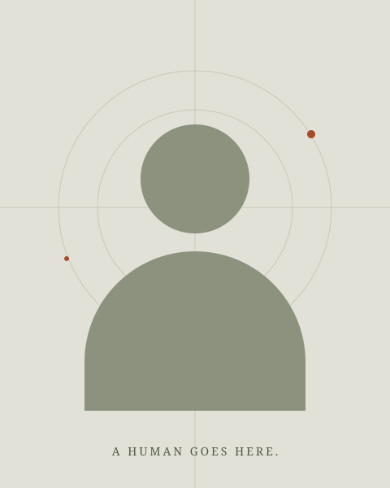
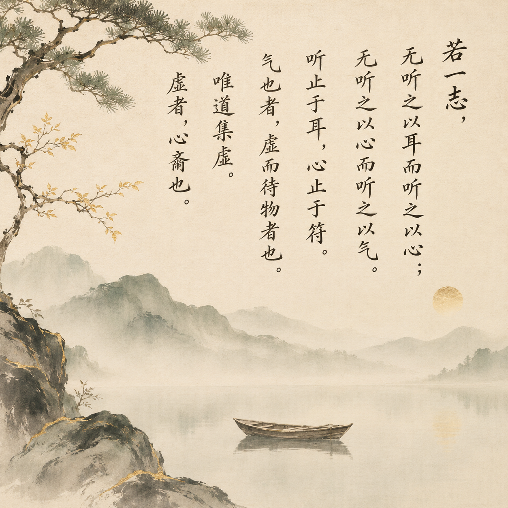
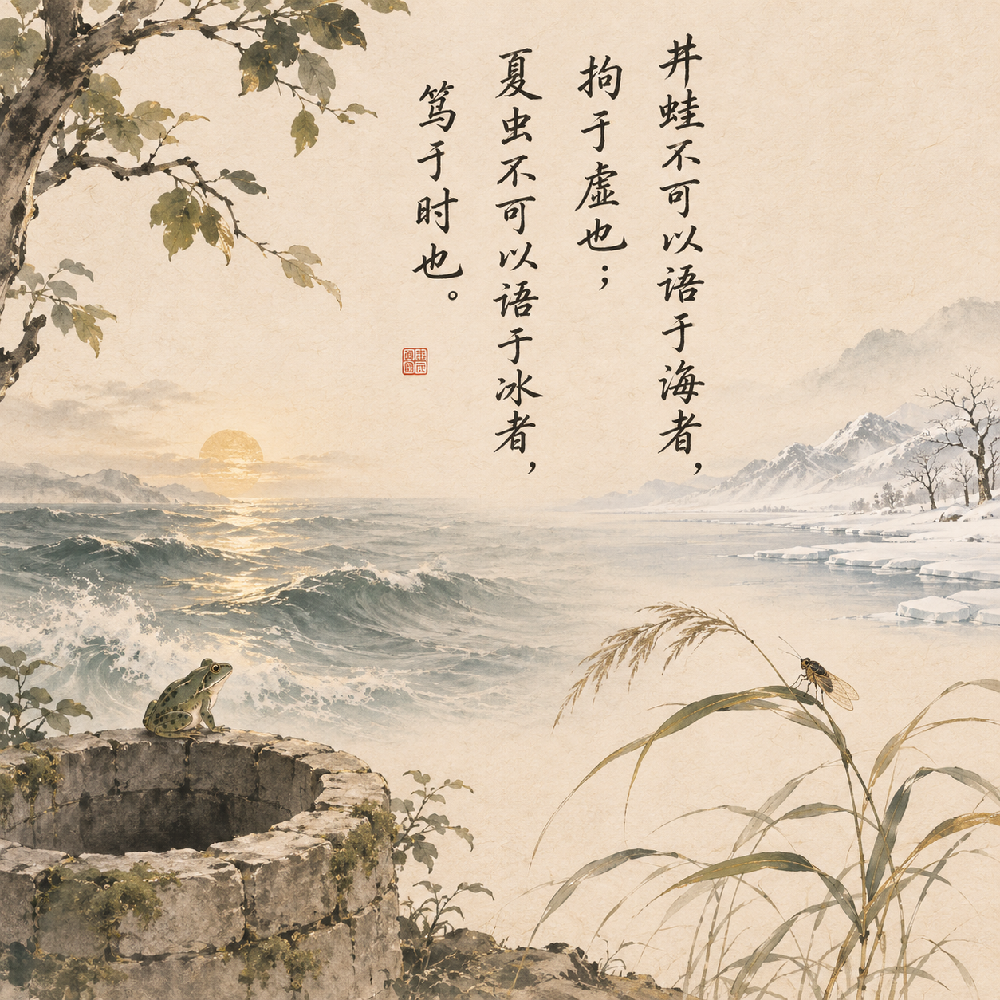

01
初中
与高中
地球人 · 学生 · 还在成长
我对世界充满好奇。
美的事物对我
有一种引力。
我出生在内蒙古，22 岁来到德国，
现在在这里读书。
Das Leben ist ein ständiges Unterwegssein.
我的引力定律
“我深爱着美的事物，
这份爱牵引我越过事件视界，
再也回不了头。”
马天成 · 这是个比喻，公式还没经过同行评审。
从太阳，向深空
九个天体，一段仍在展开的旅程。
悬停让时间慢下来，点击进入我的轨道。
你好，我是天成。 叫我老马也行。
我的故事从内蒙古开始，在德国继续。我在这里读书、学德语，也摸索着自己的路。我希望有一天能成为一名创作者。
有些问题总在我心里打转：人怎样才能活得自在？人为什么会受苦？宇宙怎么会如此奇妙，美好的事物又为何消逝得那么快？说到底，活着意味着什么？

观察者02 / 庄子与我
庄子是我的人生向导。
Zhuangzi ist mein Wegweiser fürs Leben.

把心志专一起来。别只用耳朵听，要用心去听，再进一步，用气去听。耳朵止于声音，心止于所能辨认的事物。气却虚空，能容纳来物。道在虚处汇聚，这样的虚静，就是心斋。《庄子》 · 人间世 ↗
若一志，无听之以耳而听之以心；无听之以心而听之以气。听止于耳，心止于符。气也者，虚而待物者也。唯道集虚。虚者，心斋也。

井底的青蛙受限于住处，无法和它谈大海。夏天的虫子受限于时节，无法和它谈冰。《庄子》 · 秋水 ↗
井蛙不可以语于海者，拘于虚也；夏虫不可以语于冰者，笃于时也。

人活在天地之间，就像白马从一道缝隙前飞驰而过，一眨眼就过去了。《庄子》 · 知北游 ↗
人生天地之间，若白驹之过隙，忽然而已！
画中题字引自《庄子》，白话释义为本页所作。
我们都是星辰的物质。
只不过，得先组装一下。
我们身体里的碳和氧是在恒星中炼成的。氢的来历更加久远，可以追溯到宇宙大爆炸。所以，从物质的角度说，两个人相遇，就是宇宙把自己重新排列了一下，来打声招呼。
带着数十亿年的宇宙历史，
偶尔还是会忘记德语冠词。
04 / 往日书页
那些清晨、没再出现的同学，还有从十三楼望出去的风景。
初中
与高中
05 / 文史哲
读文学、翻历史、想哲学时留下的笔记。有时是几句想法，有时是一篇长文。
读我的随笔 ↗06 / 一场早早开跑的竞选
总有一天，德国某个小镇的居民会作出明智的选择：选我当市长。
眼下，我的竞选得从分清 der、die、das 开始。
Große Träume. Noch größere Grammatik.
*给我一点鼓励吧。你的名字会保密。
07 / SATURN
08 / URANUS
09 / NEPTUNE